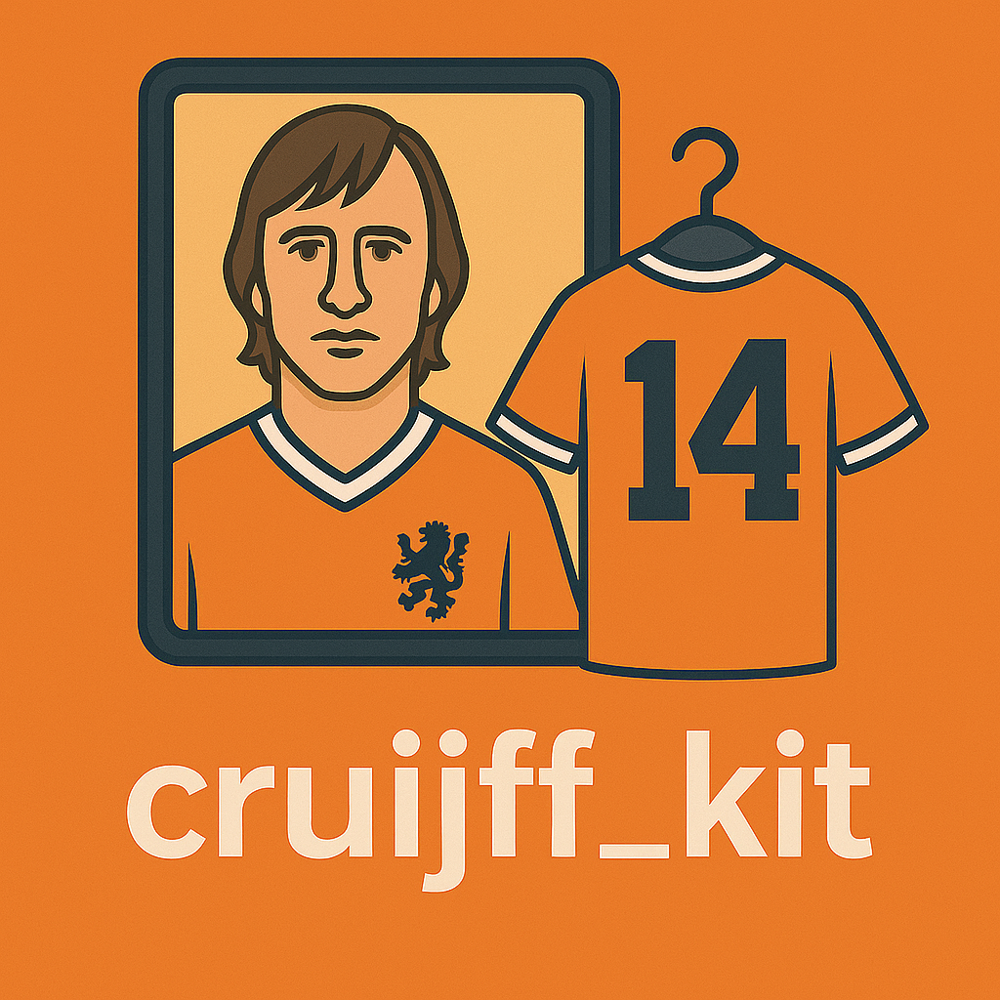

Who am I?
Outside of Work
What's That? 😏
mattie.niznik@princeton.edu
(Note: Some works and degrees still use Matthew J. Niznik)
PhD in Atmospheric Science
Rutgers University, 2010-2015
Dissertation
BS in Computer Science and Meteorology
University of Miami, 2006-2010
Research Software & Programming Analyst
Princeton University, 2023
▪ Assisting and instructing users in the use of HPC clusters
Business Analyst III
Colorado Department of Revenue, 2022-2023
▪ Tested and refined requirements for large revenue applications
Research Software Engineer
Colorado State University, 2020-2022
▪ Supported researchers in a web visualization capacity
Application Programmer
Stowers Institute of Medical Research, 2017-2020
▪ Designed and maintained a custom LIMS as part of a large team
Application Developer
Rutgers University, 2016-2017
▪ Modernized and designed new custom web applications
Post Doctoral Associate
University of Miami, 2015-2016
▪ Built tools for innovative dataset exploration
▪ Noh, Y.-J., Haynes, J.M., Miller, S.D., Seaman, C.J., Heidinger, A.K., Weinrich, J., Kulie, M.S., Niznik, M., and Daub, B.J., 2022:
A Framework for Satellite-Based 3D Cloud Data: An Overview of the VIIRS Cloud Base Height Retrieval and User Engagement for Aviation Applications.
Remote Sensing, 14, 5524, doi: 10.3390/rs14215524.
▪ Lintner, B. R., B. Langenbrunner, J. D. Neelin, B. T. Anderson, M. Niznik, G. Li, and S.-P. Xie, 2016:
Characterizing CMIP5 model spread in simulated rainfall in the Pacific Intertropical Convergence and South Pacific Convergence Zones.
Journal of Geophysical Research, Atmospheres, 121, 11590–11607, doi: 10.1002/2016JD025284.
▪ Niznik, M., B. R. Lintner, A. J. Matthews, and M. J. Widlansky, 2015:
The Role of Tropical–Extratropical Interaction and Synoptic Variability in Maintaining the South Pacific Convergence Zone in CMIP5 Models.
Journal of Climate, 28, 3353–3374, doi: 10.1175/JCLI-D-14-00527.1.
▪ Niznik, M. and B. R. Lintner, 2013:
Circulation, moisture, and precipitation relationships along the South Pacific Convergence Zone in reanalyses and CMIP5 models.
Journal of Climate, 26, 10174–10192, doi: 10.1175/JCLI-D-13-00263.1.
▪ Lintner, B. R., M. Biasutti, N. S. Diffenbaugh, J.-E. Lee, M. Niznik, and K. L. Findell, 2012:
Amplification of wet and dry month occurrence over tropical land regions in response to global warming.
Journal of Geophysical Research, 117, D11106, doi: 10.1029/2012JD017499.

A Python toolkit for conducting social research with large language models on HPC clusters. Design experiments, scaffold configurations, submit jobs, and analyze results—all from a unified workflow.
View on GitHub →